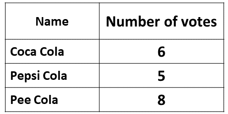

BECE
Year to Practice:
1990
1991
1992
1993
1994
1995
1996
1997
1998
1999
2000
2001
2002A
2002B
2003
2004
2005
2006
2007
2008
2009
2010
2011
2012
2013
2014
2015
2016
2017
2018
2019
2020
2021
2022
2023
PAST QUESTIONS 1991
Section A
Time yourself to improve on your speed. You are to use not more than 60 minutes for this section.
Click on the link below when your are ready.
Section B
Try the questions first, using not more than 15 minutes for each question, and watch the accompanying videos to see how the questions are solved.
Question 1
\(a)\) If \(X=\) {Prime numbers less than 13} and \(Y=\) {odd numbers less than 13}
\(i)\) List the memmbers of \(X\) and \(Y\).
\(ii)\) List the members of \(X \cap Y\) and \(X \cup Y\)
\(b)\) Three school children share some oranges as follows:
Akwasi gets \(\frac{1}{3}\) of the total, and the remainder is shared between Abena and Jantuah in the ratio \(3 : 2\). If Jantuah gets 24 oranges, how many does Akwasi get.
Question 2
Using a ruler and a pair of compasses only
\(a)\) Construct a triangle \(XYZ\) in which \(|YZ|=6cm\), \(\angle YZX=\) 60° and \(|ZX|= 9cm\). Measure \(|XY|\)
\(b)\) \(i)\) Construct the mediator of \(XY\)
\(ii)\) Draw a circle center \(X\) and a radius of 5 cm. Measure \(|YA|\), where \(A\) is the point of intersection of the mediator and the circle in the triangular region \(XYZ\)
Question 3
\(a)\) Solve the equation \(\frac{2x-1}{3} - \frac{x-2}{4} =1\)
\(b)\) Factorise completely \(2ap+aq-bq-2bp\)
\(c)\) Given that \(m = -2\) and \(n = \frac{3}{4}\), find the value of
\(i)\) \(m^2(n-1)\)
\(ii)\) \(n^2 - \frac{3}{m}\)
Question 4
The following table shows the distribution of voters in an election for class prefect.
\(i)\) Draw a pie chart to illustrate the information.
\(ii)\) What fraction of the votes was cast for Borquaye?
\(b)\) The height in centimeters of 10 school children are as follows:
165, 165, 155, 159, 174,
154, 169, 155, 155, 150
\(i)\) Make a frequency table for the data.
\(ii)\) Use your table to find the mode and the median of the distribution.